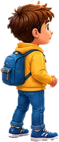

<!DOCTYPE html>
<html lang="uk">
<head>
<meta charset="UTF-8">
<meta name="viewport" content="width=device-width, initial-scale=1.0, maximum-scale=1.0, user-scalable=no, viewport-fit=cover">
<title>Дзеркальна кімната — School Kingdoms</title>
<link rel="icon" type="image/png" sizes="32x32" href="../favicon-32.png">
<link rel="apple-touch-icon" href="../apple-touch-icon.png">
<link rel="manifest" href="../manifest.webmanifest">
<link rel="preconnect" href="https://fonts.googleapis.com">
<link rel="preconnect" href="https://fonts.gstatic.com" crossorigin>
<link href="https://fonts.googleapis.com/css2?family=Fredoka:wght@500;600;700&family=Nunito:wght@600;700;800&display=swap&subset=cyrillic,cyrillic-ext,latin" rel="stylesheet">
<link rel="stylesheet" href="nav-common.css?v=4">
<link rel="stylesheet" href="nav-scroll.css?v=7">
<link rel="stylesheet" href="nav-play.css?v=3">
<style>
/* ── кімната з дзеркалом ── */
#scene{height:220px; background:linear-gradient(180deg,#e3f2ff 0%,#f4faff 64%,#d9c7a3 64%,#cbb68c 100%); display:grid; grid-template-columns:1fr 1fr; gap:10px; padding:16px 12px 26px; align-items:center;}
body.flipped #scene{background:linear-gradient(180deg,#e2d3ff 0%,#f3ecff 64%,#d8cfe6 64%,#c3b7d6 100%);}
.side{position:relative; height:100%; border-radius:16px; display:flex; flex-direction:column; align-items:center; justify-content:center; gap:8px;}
.side .lab{font-weight:800; font-size:12px; letter-spacing:.06em; color:var(--soft); text-transform:uppercase;}
#realSide{background:rgba(255,255,255,.7); border:2px dashed #d9b77c;}
#mirSide{background:linear-gradient(135deg,#dff3ff 0%,#f7fdff 45%,#cfe9fb 55%,#eaf7ff 100%); border:7px solid #c99f5c; box-shadow:inset 0 0 18px rgba(77,171,247,.35), 0 4px 0 rgba(0,0,0,.15); border-radius:46% 46% 14px 14px / 30% 30% 14px 14px;}
body.flipped #mirSide{border-color:#a873d8;}
.row{display:flex; gap:4px; font-size:30px; line-height:1; font-family:'Fredoka'; font-weight:700; min-height:34px; color:#2f5d8a;}
.row span{display:inline-block; min-width:30px; text-align:center; transition:transform .4s, opacity .4s;}
.row span.pop{animation:pop .45s;}
@keyframes pop{0%{transform:scale(0)}70%{transform:scale(1.25)}}
.row.q span{color:#c9b28a;}
#kid{position:absolute; left:50%; bottom:6px; transform:translateX(-50%); font-size:30px;}
/* намальована кімната й хлопчик (img/dzerkalna-kimnata/) */
#scene{background:linear-gradient(rgba(40,20,50,.28),rgba(40,20,50,.28)), url(img/dzerkalna-kimnata/room-bg.webp) center/cover no-repeat;}
body.flipped #scene{background:linear-gradient(rgba(90,40,160,.42),rgba(90,40,160,.42)), url(img/dzerkalna-kimnata/room-bg.webp) center/cover no-repeat;}
#realSide{background:rgba(255,250,240,.82); border-color:#e8c88a;}
#mirSide{background:linear-gradient(135deg,rgba(223,243,255,.88) 0%,rgba(247,253,255,.92) 45%,rgba(207,233,251,.88) 55%,rgba(234,247,255,.9) 100%); border-color:#e0b04a;}
#kid{left:auto; right:-14px; bottom:-22px; transform:none; width:auto; height:86px; z-index:2; filter:drop-shadow(0 3px 3px rgba(0,0,0,.3));}
body{background:linear-gradient(180deg,rgba(40,20,10,.05),rgba(40,20,10,.12)), url(img/dzerkalna-kimnata/page-bg.webp) center/cover no-repeat fixed, #3a1f3e;}   /* фон сторінки гри — малюнок художника */
/* ── редизайн як у Кота: сцена без рамки, просто в кімнаті ── */
#scene{background:none !important; border:0; box-shadow:none; overflow:visible; height:240px;}
#realSide{background:linear-gradient(180deg,rgba(255,250,240,.92),rgba(251,239,214,.92)); border:2px solid var(--goldline); box-shadow:0 4px 0 var(--goldshadow), 0 8px 14px rgba(0,0,0,.3);}
#mirSide{border-color:#e0b04a; box-shadow:inset 0 0 18px rgba(77,171,247,.35), 0 0 0 3px #a8741c, 0 8px 16px rgba(0,0,0,.35);}
#kid{height:104px; bottom:-30px;}
</style>
</head>
<body>
<script src="../sk-footer.js?v=6" data-base="../" data-back="self"></script>
<script src="nav-common.js?v=3"></script>
<script>
(function(){
  "use strict";
  var TOTAL = 5, log;
  var FLIP = {"←":"→", "→":"←", "↑":"↑", "↓":"↓"};
  function rev(a){ return a.slice().reverse(); }
  function mirArrows(a){ return rev(a).map(function(x){ return FLIP[x] || x; }); }
  function str(a){ return a.join(" "); }

  NAV.mount({
    next: "kit.html",   // «Вирушай далі! ›» — наступний пункт карти
    title:"Дзеркальна кімната", emoji:"🪞✨", sub:"Логіка · Світ навиворіт · 5 кроків",
    riddle:"У дзеркальній кімнаті все видно лише в дзеркалі. Дзеркало показує:<span class='seq'>🪞 ★ ● ▲</span>А який порядок <b>насправді</b>? Знайди правило дзеркала. А потім — 🔄 переворот, і в кімнаті з'являться стрілки…",
    play:"У кімнату ▶", steps:TOTAL, crown:"🪞✨",
    badgeOff:"🪞 дзеркало", badgeOn:"🔄 стрілки в дзеркалі",
    prizeKey:"sk_dzerkalo_prize_v1", href:"dzerkalna-kimnata.html", doneText:"Дзеркало розгадано — нагороду отримано!",
    winTitle:"Дзеркало розгадано!", winPerfect:"Жодна дзеркальна пастка не спрацювала!",
    lesson:[
      "Дзеркало <b>розвертає порядок</b>: перший стає останнім — ★ ● ▲ у дзеркалі означає ▲ ● ★ насправді.",
      "🔄 Стрілки в дзеркалі ще й <b>міняють напрямок</b>: ← стає →, а ↑ і ↓ не змінюються.",
      "Щоб знайти правду, зроби обидва кроки: <b>розверни порядок</b> і <b>розверни стрілки</b> ← →."
    ],
    scene:'<div class="side" id="realSide"><span class="lab">Насправді</span><div class="row q" id="realRow"></div></div>'+
          '<div class="side" id="mirSide"><span class="lab">У дзеркалі</span><div class="row" id="mirRow"></div></div>',
    afterScene:'<div class="log" id="log"></div>',
    onStart:startGame
  });

  function renderLog(){
    var box = NAV.$("log"); box.innerHTML = '<div class="lh">📒 Записник дзеркала</div>';
    if(!log.length){ box.appendChild(NAV.el("div","empty","Поки нічого.")); return; }
    var rows = NAV.el("div","rows"); log.slice(-3).forEach(function(r){ rows.appendChild(NAV.el("div","r",r)); }); box.appendChild(rows);
  }
  function row(id, items, q){
    var r = NAV.$(id); r.innerHTML = ""; r.classList.toggle("q", !!q);
    items.forEach(function(x, i){ var s = NAV.el("span", "", q ? "?" : x); r.appendChild(s); if(!q) setTimeout(function(){ s.classList.add("pop"); }, 90*i); });
  }
  /* показати дзеркало й «?» на місці справжнього порядку */
  function show(mir){ row("mirRow", mir); row("realRow", mir, true); }
  function reveal(real){ row("realRow", real); NAV.snd.chime(); }
  function opts(right, wrong){
    var o = [{tx:str(right), ok:true}], seen = {}; seen[str(right)] = 1;
    wrong.forEach(function(w){ var k = str(w[0]); if(!seen[k]){ seen[k] = 1; o.push({tx:k, why:w[1]}); } });
    return o;
  }

  function startGame(){
    log = []; NAV.step(0,TOTAL); renderLog();
    var mir = ["★","●","▲"], real = rev(mir);
    show(mir);
    NAV.hint("Подивись у дзеркало 🪞 — що там видно?");
    NAV.question("Який порядок <b>насправді</b>?", opts(real, [
      [mir, "Так фігури видно в дзеркалі. А дзеркало все показує навпаки!"],
      [["●","▲","★"], "Фігури не зсуваються по колу — дзеркало розвертає порядок: перша стає останньою."]
    ]), function(){
      reveal(real);
      log.push("🪞 "+str(mir)+" → насправді <b>"+str(real)+"</b>"); renderLog();
      NAV.hint("Так! У дзеркалі перша фігура — насправді остання.","good");
      setTimeout(step2, 1300);
    }, {cols:1, big:true});
  }

  function step2(){
    NAV.step(1,TOTAL); NAV.again = step2;
    var real = NAV.shuffle(["🍎","🍌","🍇","🍒","🍐","🥕"]).slice(0,4), mir = rev(real);
    show(mir);
    NAV.hint("Тепер у дзеркалі — фрукти. Перевір правило!");
    NAV.question("Як фрукти лежать <b>насправді</b>?", opts(real, [
      [mir, "Так їх видно в дзеркалі — а насправді порядок навпаки."],
      [[mir[1],mir[2],mir[3],mir[0]], "Дзеркало не зсуває по колу — воно розвертає весь ряд."],
      [[mir[3],mir[1],mir[2],mir[0]], "Помінялись лише крайні — а розвернутись має весь ряд: середні теж!"]
    ]), function(){
      reveal(real);
      log.push("🪞 "+str(mir)+" → насправді <b>"+str(real)+"</b>"); renderLog();
      NAV.hint("Правильно! Читай ряд у дзеркалі з кінця.","good");
      setTimeout(step3, 1300);
    }, {cols:1, big:true});
  }

  function step3(){
    NAV.step(2,TOTAL);
    NAV.hint("Подивись у записник 📒 — яке правило дзеркала?");
    NAV.question("Що робить дзеркало?", [
      {tx:"Розвертає порядок: перший стає останнім", ok:true},
      {tx:"Нічого не змінює", why:"Глянь у записник: у дзеркалі ряд інший, ніж насправді."},
      {tx:"Перемішує як заманеться", why:"Ні — є чітке правило: ряд читається з кінця."}
    ], function(){ setTimeout(flip, 900); });
  }

  function flip(){
    NAV.modal("🔄","Навиворіт!","У кімнату внесли <b>стрілки-вказівники</b>. А зі стрілками дзеркало хитріше: воно розвертає <b>і порядок, і напрямок</b> ← →!",{nav:true, btn:"🔄 Перевернути"}, function(){
      NAV.snd.whoosh(); NAV.flipAnim();
      setTimeout(function(){
        NAV.setFlip(true); NAV.step(3,TOTAL);
        log.push("🔄 <b>У дзеркалі — стрілки!</b>"); renderLog();
        var mir = ["→","→","↑"], real = ["↑","←","←"];
        show(mir);
        NAV.hint("Дзеркало показує <b>→ → ↑</b>. Пам'ятай про обидва розвороти!");
        NAV.question("Куди стрілки показують <b>насправді</b>?", opts(real, [
          [["↑","→","→"], "Порядок розвернуто — молодець! Але дзеркало ще й міняє ← і →."],
          [["←","←","↑"], "Напрямок розвернуто — а порядок теж треба розвернути!"],
          [mir, "Так стрілки видно в дзеркалі. Насправді — навпаки!"]
        ]), function(){
          reveal(real);
          log.push("🪞 → → ↑ → насправді <b>↑ ← ←</b>"); renderLog();
          NAV.hint("Так! І порядок навпаки, і стрілки навпаки.","good");
          setTimeout(step5, 1400);
        }, {cols:2, big:true});
      }, 500);
    });
  }

  function step5(){
    NAV.step(4,TOTAL); NAV.again = step5;
    var real, mir, o;
    do{
      real = [0,0,0,0].map(function(){ return NAV.pick(["←","→","↑","↓"]); });
      mir = mirArrows(real);
      o = opts(real, [
        [rev(mir), "Порядок розвернуто, а напрямок ← → — ні. Зроби обидва розвороти!"],
        [mir.map(function(x){ return FLIP[x]; }), "Стрілки розвернуто, а порядок — ні. Читай ряд з кінця!"],
        [mir, "Так видно в дзеркалі. Насправді — навпаки!"]
      ]);
    }while(o.length < 4 || real.filter(function(x){ return x==="←" || x==="→"; }).length < 2);
    show(mir);
    NAV.hint("Остання дзеркальна загадка!");
    NAV.question("Куди стрілки показують <b>насправді</b>?", o, function(){
      reveal(real);
      log.push("🪞 "+str(mir)+" → насправді <b>"+str(real)+"</b>"); renderLog();
      NAV.hint("Чудово! Дзеркальну кімнату розгадано.","good");
      setTimeout(NAV.finish, 1500);
    }, {cols:2, big:true});
  }
})();
</script>
<script type="module" src="../firebase-config.js"></script>
<script src="../sk-items.js?v=25"></script>
<script src="../sk-curriculum.js?v=9"></script>
<script src="../sk-rewards.js?v=6"></script>
<script src="../sk-prize.js?v=3"></script>
<script src="../sk-finish.js?v=6"></script>
<script src="nav-scroll.js?v=3"></script>
<script>NAVSCROLL.init({hintTop:true, winImg:"img/dzerkalna-kimnata/kid.webp", bg:"img/dzerkalna-kimnata/start-hero.webp", frame:"img/dzerkalna-kimnata/title-frame.webp", focus:[0.06, 1], top:"#52283a", bot:"#3a1f3e", play:"У кімнату"});</script>
<script src="nav-intro.js?v=3"></script>
</body>
</html>
